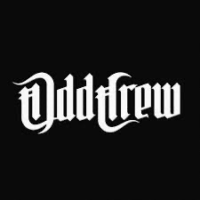
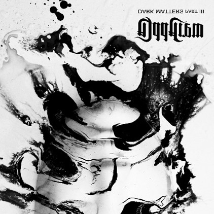
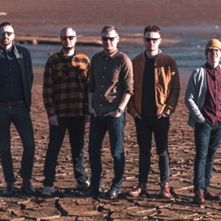
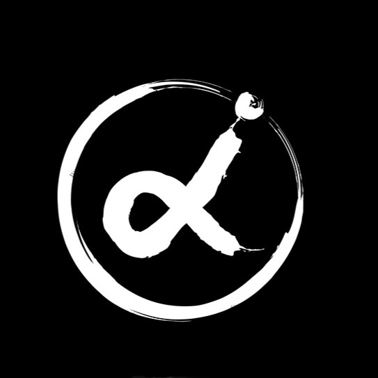
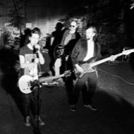
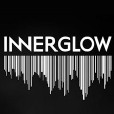
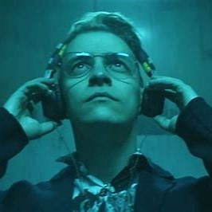
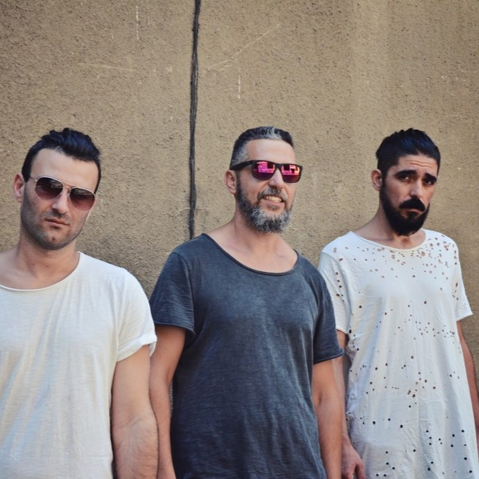

 През 1989 г. две 3-годишни деца, каращи велосипеди в квартала си, случайно се блъскат едно в друго. Двамата се казват Васил, сприятеляват се и заедно по-късно откриват групи като Black Sabbath и Led Zeppelin.През 95-а към тях се присъединява Мартин Стоянов. През 98 г. се запознават с Васко Кръпката .Първите три албума на групата се появат под първоначалното им име „Каскадьори“. Наред с клубните концерти, през периода 2001-2008 г. Каскадиори са били и на турнета и сесийни музиканти на „The Patch“. През 2008 променят името си на ODD CREW и издават албума „We Are What We Are“, който им създава огромна база от фенове, наричащи себе си „ODD CREW ZOMBIES“ и постоянно подкрепящи групата на концерти и обиколки в цялата страна. През 2012 г. ODD CREW издадават лбума „Beyond The Shell“, който съдържа 15 дълги, тежки песни с минорно настроение, включително „Death Trap“ и 3 инструментала. Музикантите го определят като „най-грубите песни, които групата е свирила някога“. През 2014 г. групата стартира кампания за групово финансиране и обявява, че са на път да запишат предстоящия си албум „Mark These Words“. По време на кампанията те успяват да продадат предварително над 300 копия. ODD CREW записват албума с шведския продуцент Даниел Бергстранд в „Dugout Studios“ в Швеция и след това изпращат песните на флоридския продуцент Джейсън Суекоф за смесване/мастеринг. Албумът е издаден през 2015 г.През 2018 г. излиза първото видео от новия албум на бандата – „Same Old Mе“ През 2021 г. ODD CREW обявява, че групата е подписала договор за запис с немския лейбъл Drakkar Entertainment за световно разпространение. Малко след това обяват и нов албум и така „Dark Matters – Part I“ е издаден през 2022 г.
НОВИНИ
На тази страница ще можете да прочете повече за изгряващите български рок банди.
Ще имате възможността да се информирате за наскоро излезли албуми, сингъли или дори интервюта, в които групите разказват подробно за своята история.
Петте групи, които сме включили в секцията за новини тази седмица, са: Odd Crew (метъл), Jin Monic (инди рок), ALI (рок), Innerglow (електро рок) и Jeremy? (инди рок).
Приятно четене!
ODD CREW
 Родната група Odd Crew издаде третата част от поредицата албуми „Dark Matters" още на 6-ти декември, но поради логистични причини част от физическите носители се забавиха. От бандата споделят, че вече на oddcrew.net и в Rebel Store Sofia, освен CD-Digipak, специален бокс сет и ексклузивен мьрч, е налична и двойна цветна плоча от новия "Dark Matters - Part III". Албумьт е записан, миксиран и мастериран в „ButcherHouse Studio" като групата отговаря изцяло за процеса по създаването му. Концептуалната линия продължава врьзката с предходните две части на „Dark Matters", а лирическите тематики са отново сворзани с екзистенциални въпроси за времето, крьговрата и смисьла на живота, и човешките преживявания в този микс.
JIN MONIC
Jin Monic (Джин Моник) е българска инди рок група. Стилово определяна като алтърнатив, пост пънк, гаражен рок, психеделия.Основана е през 2011 година от Николай Иванов (вокал), Ивайло Василев (китара), Боян Дечев (китара), Джокич Стефанов (бас) и Георги Иванов (барабани). За свои влияния музикантите посочват групи като Joy Division, Manic Street Preachers, Sonic Youth, Radiohead, Oasis, Sex Pistols, Arctic Monkeys, The National, Tame Impala, New Order, Nirvana, Gorillaz, Jack White, Black Keys, Queens of the Stone Age, както и MGMT, Franz Ferdinаnd, Parquet Courts, Awolnation и други. За първи път групата излиза на сцена през 2013 г. и оттогава изнася концерти основно в София, но и други български градове. През 2014 г. подписва договор с българския музикален инди лейбъл Homeovoxmusic. През 2015 г. участва във фестивала „Spirit of Burgas“, като подгрява британската група Kasabian., а на следващата година участват на фестивала „Wrong Fest“ с хедлайнери Yuck. Първият сингъл на групата е от 2015 г., „Sober Face“, последван от синглите „Esus“ и „You Stay Blue“. През 2016 г. излиза първият им едноименен албум, съпроводен с клипове за три от песните в албума – „Doors of Youth“, „Hateful“ и „Pyramid“. През 2018 г. излиза ново EP „Candy Coated“ с клип към едноименната песен. По видеоклиповете си са работили с режисьора Симеон Стоилов и оператора Добрин Кашавелов, работили и по проекти на група „Остава“. Към август 2019 г., Jin Monic присъстват на два пъти в класацията „БНР Топ 20“ със синглите „Candy Coated“ и „Saline“.
 Софийската инди-рок банда Jin Monic представи пред Радио София новите си две песни „Euphoria“ и “We Failed Them”. Фронтменът на групата Николай Иванов сподели, че след натрупания опит се чувстват по-свободни да вкарват в музиката си по-неконвенционални звучения. „Отново на преден фон са Ивайло и Боян като автори на музиката. Останалите се включваме с идеи, но те са водещото ядро, когато говорим за звука. На „Euphoria“ Ивайло написа текста, на „We Failed Them“ аз го написах“, каза Николай Иванов.
ALI
 Двигател на групата е вокалистът Али Абдала, който е графичен и уеб дизайнер, а музиката е онова, на което посвещава времето си извън офиса.Той събира сили с Антони Иванов и Петар Шварц (китари), Орлин Станчев (барабани), Боби Ганчев (кийборд) и Емил Доков (вокали), които също трупат стаж в IT сферата, но споделят обща любов към музиката. Басът пък е в ръцете на Калоян Димитров, но не само - той отговаря и за финалния звук на продукцията заради опита си като продуцент, натрупан през последните 20 години.
 Малко след премиерата му се срещнахме с трима от шестимата в бандата. Фронтменът Али Абдала, китаристът Петар Шварц и барабанистът Орлин Станчев ни поканиха в тяхната "вътрешна вселена", за да ни разкажат за процесът на създаване на INTROVERSE, бъдещето на групата и начинът, по който гледат на музиката си. Каним и вас да се потопите за 35 минути във вселената на ALI.
INNERGLOW
 Innerglow е нова група на българската сцена, която залага на авторска музика. Песните им са в електро рок стил, със смесица между електронни и живи инструменти, като групата се стреми да налага собствено звучене с множество алтърнатив, поп, денс и фънк елементи. Заедно с авторския си материал, четиримата от групата изпълняват и кавъри на Muse, Depeche mode, The Beatles, Queen и други класически и модерни банди. Innerglow е създадена от бивши членове на рок групата Crush, към които се присъединяват музиканти, насъбрали опит в рок групи като Viperfish и Rock Unknown Persons.
 Наши гости бяха момчетата от Innerglow, които със своята уникална енергия озаряват българската музикална сцена. Днес направихме премиера на техния нов сингъл "Promises" - песен, която доказва, че не само името, но и музиката им носи светлина и смисъл. Вижте!
JEREMY?
Групата е създадена в Каварна от Ерсин Мустафов, Ташо Колев и Явор Лалев. Първият сингъл на „Джеръми?“ е песента Runaway, чието видео е публикувано в началото на 2014 г. Следва турне в няколко града, както и изява с група П.И.Ф. в Лондон през 2014 г.„Джеръми?“ нашумява със сингъла си Fake fruits, чийто клип е излъчван в балканската версия на MTV през 2015 г. С тази песен групата участва в международния конкурс International Songwriting Competition и спечелва първо място. Две песни на JEREMY? са включени в саундтрака на български филмови продукции: I Want To Be Like You и „Докато Ая спеше“. През 2016 „Куийн“ обявява, че „Джеръми?“ ще подгрява концертите ѝ в България, Полша и Румъния. Дебютният ѝ едноименен албум излиза през 2016 г. Някои песни от него са записвани в БНР заедно с Константин Райдовски, а голяма част от албума е записан в Perfect Records с Прокопи Андреев и Светослав Борисов. Албумът е завършен в Wav Mastering – Дъблин, Ирландия.През 2016 г. групата представя първия си албум с концерт в софийския клуб „Терминал 1“.
 Инди рок групата Jeremy? сподели официален видеоклип към най-новия си сингъл "Gotta know". Песента беше представена пред публика за пръв път на клубно участие на бандата в София тази седмица. По-долу можете да гледате видеоклипът към "Gotta know", режисиран от Георги Манов.